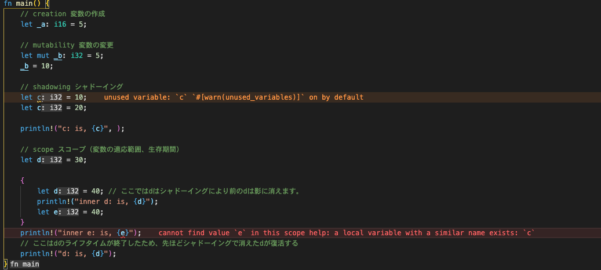

2日目
今日も頑張ります！！
変数について、
変数について学習する内容は
- 変数の作成
- 変数の変更
- シャドーイング（上書きと表現してみます）
- スコープ
の4つです。
fn main() { // creation 変数の作成 let _a: i16 = 5; // mutability 変数の変更 let mut _b: i32 = 5; _b = 10; // shadowing シャドーイング let c = 10; let c = 20; println!("c: is, {c}", ); // scope スコープ（変数の適応範囲、生存期間） let d = 30; { let d = 40; // ここではdはシャドーイングにより前のdは影に消えます。 println!("inner d: is, {d}"); let e = 40; } println!("inner e: is, {e}"); // ここはdのライフタイムが終了したため、先ほどシャドーイングで消えたdが復活する println!("d: is, {d}"); }

これ便利だな。エラー分とか警告を見やすくなっている。
fn main() { // データ型に関する内容 // boolean // 真偽値に関するデータ型 let _b1: bool = true; // unsigned integers // 符号なしの整数値 let _i1: u8 = 1; let _i2: u16 = 1; let _i3: u32 = 1; let _i4: u64 = 1; let _i5: u128 = 1; // signed integers // 符号ありの整数値 let _i7: i8 = 1; let _i8: i16 = 1; let _i9: i32 = 1; let _i10: i64 = 1; let _i11: i128 = 1; // floating point numbers // 浮動小数点の数 let _f1: f32 = 1.0; let _f2: f64 = 1.0; // platform specific integers // プラットフォームに合わせた整数 let _p1: isize = 1; let _p2: usize = 1; // characters, &str, and strings // キャラクター型、スライス文字列、文字列型 let _c1: char = 'c'; let _s1: &str = "hello"; let _s2: String = String::from("world"); // arrays // 配列 let _a1 = [1, 2, 3, 4, 5]; let _i1 = _a1[4]; // tuples // タプル let _t1 = (1, 2, 3); let _t1 = (5, 5.0, "5"); let _s1 = _t1.2; let (_i1, _f1, _s1) = _t1; let _unit = (); // タプルのユニットを宣言 // Type aliasing // 型定義を変数にすることも可能 type Age = u8; let _a1: Age = 57; }
結構綺麗にまとめられている。
staticやconstによる定数
// グローバルスコープで定数やスタティックな変数、定数を定義する const MAX_PLAYERS: u8 = 10; static CASINO_NAME: &str = "Rusty Casino"; fn main() { let _a = 10; let _b = 10; let _c = CASINO_NAME; let _d = CASINO_NAME; let _e = MAX_PLAYERS; println!("{_a}"); println!("{_b}"); println!("{_c}"); println!("{_d}"); println!("{_e}"); }
関数
基本的な形はこれ。
fn main() { let z = my_function(22); println!("{}", z); } fn my_function(x: i32) -> i32 { println!("my_function called with: {}", x); 10 }
- リターンにはセミコロンをつけない
- 型情報は正確に
- 変数に結果を返すことも可能
制御構文
ifやloop、whileやfor in
fn main() { // if/else let a = 5; if a > 5 { println!("bigger than 5"); } else if a > 3 { println!("bigger than 3"); } else { println!("smaller or equal to 3"); } let _b = if a > 5 { 1 } else { -1 }; // loop // let _x = loop { // break 5; // }; // while loop let mut a = 0; while a < 5 { println!("a is {a}"); a += 1; } // for loop let a = [1, 2, 3, 4, 5]; for element in a { println!("{}", element); } }
コメント
#![allow(unused)] fn main() { // １行のコメント /* * 複数行のコメントアウト * */ }